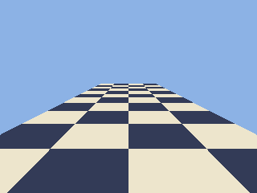
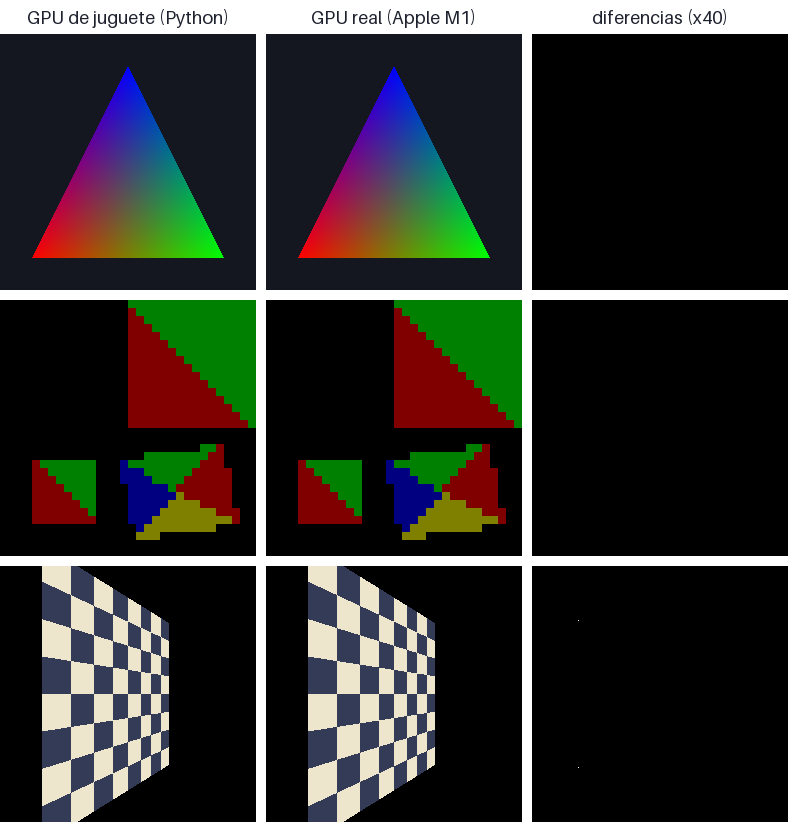
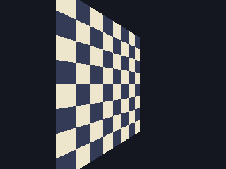
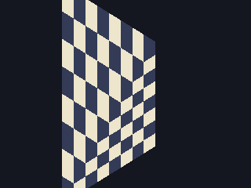
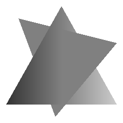

Módulo 4 · La GPU por dentro
El pipeline gráfico etapa por etapa
Qué le pasa a un triángulo desde que llamas a gl.drawArrays hasta que se convierte en píxeles: cada etapa, qué recibe, qué entrega, cuáles programas tú y cuáles son hardware fijo que solo puedes configurar.
Al terminar esta lección
- Seguirás un triángulo concreto por todas las etapas: vertex fetch, vertex shader, ensamblado, recorte, división de perspectiva, viewport, culling, rasterización, interpolación, fragment shader y operaciones por fragmento.
- Calcularás a mano, con números, dónde cae un vértice en la pantalla.
- Sabrás qué píxeles cubre un triángulo: centros de píxel, funciones de arista y la regla de desempate que medimos en la GPU.
- Entenderás por qué los varyings se interpolan con corrección de perspectiva y qué pasa si no.
- Conocerás el orden de las pruebas por fragmento (scissor, stencil, profundidad, blending) y cómo early-z y la eliminación de superficies ocultas ahorran trabajo… hasta que usas
discard.
Una cadena de montaje
En la lección anterior viste que la CPU apunta órdenes y la GPU las ejecuta después. Ahora vamos a mirar qué ejecuta la GPU cuando le llega un drawArrays(gl.TRIANGLES, 0, 3). La respuesta es una cadena de montaje de una docena de etapas, el pipeline gráfico. Por un extremo entran bytes de un buffer; por el otro salen colores escritos en píxeles. Cada etapa recibe lo que entrega la anterior, lo transforma y lo pasa a la siguiente.
Solo dos etapas son programas que escribes tú: el vertex shader y el fragment shader. Todas las demás son hardware de función fija: hacen siempre lo mismo y solo puedes configurarlas con llamadas como gl.viewport, gl.enable(gl.CULL_FACE) o gl.blendFunc. Entenderlas es lo que te permite predecir cada píxel, en lugar de cambiar números hasta que «quede bien».
Esa última frase del diagrama es importante: la especificación de OpenGL describe el pipeline como si cada etapa terminara antes de empezar la siguiente, y exige que el resultado sea el mismo que si fuera así. Por dentro, una GPU moderna procesa miles de vértices y fragmentos a la vez, adelanta pruebas cuando sabe que puede y reparte la pantalla en trozos. Pero si entiendes el orden lógico, entiendes el resultado.
Un triángulo, etapa por etapa
Esta demo es una GPU de verdad… de juguete: es la versión en JavaScript de la GPU que escribirás en Python en 4.3, así que cada número que ves está calculado con las mismas fórmulas que usa el hardware (en 4.3 comprobarás que da los mismos píxeles que la GPU real, uno a uno). Avanza por las etapas con los botones. Gira el triángulo, acerca su vértice C a la cámara hasta que la atraviese, activa el culling, quita la corrección de perspectiva, sube la resolución. Y en las etapas finales, pasa el ratón por la rejilla.
El resto de la lección recorre las mismas etapas con calma. Vuelve a la demo en cada una.
1. Vertex fetch: leer los atributos
Antes de ejecutar tu vertex shader, la GPU tiene que conseguir sus entradas. Para cada vértice que vaya a procesar (del primero al primero + cuenta − 1 en un drawArrays, o los que diga el buffer de índices en un drawElements), una unidad fija de la GPU lee de los buffers los bytes de cada atributo y los convierte al tipo que espera el shader. Las instrucciones de «dónde» y «cómo» leer están en el VAO: para cada atributo, de qué buffer, cuántos componentes, de qué tipo, cada cuántos bytes empieza el siguiente vértice (stride) y en qué byte empieza el primero (offset).
Todo eso es la materia de 4.4; aquí basta con una idea: el vertex fetch es aritmética de direcciones y conversión de tipos. Para el vértice $i$, el atributo empieza en el byte $\text{offset} + i \times \text{stride}$ del buffer. Si te equivocas en un número, la GPU no se queja: lee bytes de otro sitio y los interpreta como puedan.
Con índices, además, entra en juego la caché post-transformación: si el mismo índice aparece dos veces cerca, la GPU puede reutilizar el resultado del vertex shader en lugar de volver a ejecutarlo. En 4.4 medirás con la GPU de juguete cuánto se ahorra y por qué importa el orden de los índices.
2. El vertex shader: posiciones en espacio de clip
El vertex shader se ejecuta una vez por vértice (no por triángulo: un vértice compartido por seis triángulos, gracias a los índices, se procesa idealmente una sola vez). Recibe los atributos de ese vértice y los uniforms, que son iguales para todos, y tiene una obligación: escribir gl_Position, un vec4 en espacio de clip. Además puede escribir varyings (las variables out), que viajarán hasta el fragment shader.
- Dos atributos: la posición del vértice en el espacio del objeto y su color. Llegan del vertex fetch, uno distinto en cada invocación.
- La matriz modelo-vista-proyección, un uniform: la misma para todos los vértices de este dibujo (3.6).
- Un varying: el vertex shader lo escribe en cada vértice y el rasterizador lo interpolará para cada fragmento.
- La salida obligatoria. El
1.0en la cuarta componente convierte la posición en un punto (se ve afectado por la traslación de la matriz). El resultado tiene cuatro componentes(x, y, z, w): no son todavía coordenadas de pantalla.
Lo que el vertex shader no puede hacer también define la etapa: no ve a los demás vértices (ni siquiera a los de su triángulo), no puede crear ni destruir vértices y no sabe qué primitiva formará. Es una función pura: atributos + uniforms → posición + varyings.
Ejemplo 4.2.1 — Un vértice, de la matriz al píxel
Un vértice sale del vertex shader con gl_Position = (0.5, -0.25, 1.2, 2.0). El canvas mide 800 × 600 y el viewport es el de por defecto, gl.viewport(0, 0, 800, 600). ¿En qué píxel cae y qué profundidad escribe?
- ¿Pasa el recorte? El volumen de clip es $-w \le x, y, z \le w$, con $w = 2$: $x = 0{,}5$, $y = -0{,}25$ y $z = 1{,}2$ están entre $-2$ y $2$. El vértice está dentro: no hay que recortar nada.
- División de perspectiva: NDC $= (x/w,\ y/w,\ z/w) = (0{,}25,\ -0{,}125,\ 0{,}6)$.
- Viewport: $x_v = 0 + (0{,}25 + 1)/2 \cdot 800 = 500$; $y_v = 0 + (-0{,}125 + 1)/2 \cdot 600 = 262{,}5$; $z_v = (0{,}6 + 1)/2 = 0{,}8$.
- Resultado: el vértice cae en $(500,\ 262{,}5)$ en coordenadas de ventana, con la y medida desde abajo. Es la frontera entre los píxeles de columna 499 y 500, y justo el centro vertical de la fila 262 (cuyo centro es $262{,}5$). Si ese punto fuera un fragmento, su profundidad sería $0{,}8$.
Fíjate en que $w = 2$ no es una casualidad: con una matriz de perspectiva, $w$ es la distancia a la cámara a lo largo de su eje de visión. Dividir por $w$ es justo lo que hace que lo lejano se vea más pequeño (3.6).
3. Ensamblado de primitivas
Los vértices transformados se agrupan en primitivas: puntos, líneas o triángulos, según el primer argumento de la orden de dibujo. Con gl.TRIANGLES, cada tres vértices consecutivos forman un triángulo independiente. Con gl.TRIANGLE_STRIP, cada vértice nuevo forma un triángulo con los dos anteriores; con gl.TRIANGLE_FAN, todos comparten el primer vértice. Arrastra los puntos y cambia el modo:
Mira el modo TRIANGLE_STRIP: los triángulos impares no se forman como (1, 2, 3) sino como (2, 1, 3). La GPU intercambia sus dos primeros vértices para que todos los triángulos de la tira conserven el mismo sentido de giro (winding). En la demo, verde es antihorario (CCW) y rojo, horario (CW): en una tira bien hecha, todos del mismo color.
El giro importa porque es la única forma que tiene la GPU de saber si un triángulo te mira de frente o de espaldas: por convenio, un triángulo cuyos vértices se ven en sentido antihorario en la pantalla está de frente (gl.frontFace(gl.CCW), el valor por defecto). Lo usará el culling, dentro de dos etapas.
Las líneas (LINES, LINE_STRIP, LINE_LOOP) y los puntos (POINTS, con su tamaño en gl_PointSize, entre 1 y 511 píxeles en nuestra máquina) existen, pero tienen trampa:
Las líneas miden siempre un píxel. gl.lineWidth(10) no da ningún error y gl.getParameter(gl.LINE_WIDTH) devuelve 10, pero el rango admitido, gl.getParameter(gl.ALIASED_LINE_WIDTH_RANGE), es [1, 1] en casi todas las plataformas actuales de WebGL (en Chrome sobre Metal, la línea ocupa una sola fila de píxeles): el rasterizador recorta el grosor a ese rango. Las líneas gruesas se dibujan como triángulos, con los vértices desplazados a lo largo de la perpendicular al segmento de 3.2. Es el comportamiento raro «gl.lineWidth no hace nada» de 5.3, que trata a fondo puntos y líneas en WebGL.
4. Recorte: el volumen de clip
Ya tenemos triángulos en espacio de clip. Lo que es visible es lo que está dentro del volumen de clip (lo derivaste en 3.6; aquí nos interesa qué hace el hardware con él):
$$-w \le x \le w, \qquad -w \le y \le w, \qquad -w \le z \le w$$Un triángulo completamente fuera se descarta. Uno completamente dentro pasa tal cual. Y uno que cruza la frontera se recorta: se calcula dónde corta cada arista al plano, y el triángulo se convierte en un polígono (hasta 9 vértices si cruza varios planos) que se vuelve a partir en triángulos en abanico. Los vértices nuevos reciben varyings interpolados linealmente en espacio de clip, que es lo correcto: antes de dividir por $w$, todo es lineal.
En la demo, en la etapa «Recorte», sube «z de C» hasta el máximo: el vértice C queda detrás del plano cercano. Su $w$ se vuelve negativo, el triángulo se corta y aparecen dos vértices nuevos sobre el plano: un polígono de 4 vértices, es decir, dos triángulos. La GPU de juguete de Python hace exactamente lo mismo con un suelo que pasa por debajo de la cámara:

ejemplo_04_perspectiva.py): el suelo es un solo quad que llega hasta detrás de la cámara. La esquina de atrás tiene w = −1,817; sin recorte, al dividir por un $w$ negativo esa esquina aparecería «reflejada» delante. Estadísticas del dibujo: triangulos=2, recortados=2.Recortar geométricamente es caro: genera vértices nuevos y rompe el ritmo del pipeline. Por eso las GPU hacen trampa con los planos laterales ($x$ e $y$): en lugar de cortar el triángulo, lo rasterizan entero y no generan fragmentos fuera del viewport. El rasterizador trabaja con un rango de coordenadas mucho más grande que la pantalla (la guard band), así que solo hace falta recortar de verdad cuando un triángulo se sale de ese rango enorme. El único recorte que no se puede evitar es el del plano cercano: los puntos con $w \le 0$ están detrás de la cámara y dividir por $w$ los proyectaría en posiciones absurdas. Nuestra GPU de juguete hace lo mismo: recorta contra los planos cercano y lejano ($z = \pm w$) y deja $x$ e $y$ al viewport. El resultado es idéntico; lo verás en 4.3.
Síntoma: una malla se ve bien, pero en cuanto la cámara se acerca y algún vértice queda detrás, los triángulos que lo tocan desaparecen, se estiran por toda la pantalla o se «dan la vuelta».
Causa: casi siempre, que el vertex shader hace él mismo la división de perspectiva: gl_Position = vec4(p.xyz / p.w, 1.0). Así la GPU recibe un vértice con $w = 1$ que ya no sabe que estaba detrás de la cámara, y no puede recortarlo bien. En Chrome lo medimos con un triángulo con un vértice detrás: bien hecho cubre 21 952 píxeles; dividiendo en el shader, solo 720 (una astilla en el borde).
Solución: entrega gl_Position sin dividir, con su $w$. La división la hace el hardware después del recorte. Lo arreglarás en el ejercicio 4.2.3.
5. División de perspectiva: NDC
Después del recorte, todos los vértices cumplen $w > 0$ y la GPU divide:
$$(x_{ndc},\ y_{ndc},\ z_{ndc}) = \left(\frac{x}{w},\ \frac{y}{w},\ \frac{z}{w}\right)$$El resultado son las coordenadas normalizadas de dispositivo (NDC): un cubo de $-1$ a $1$ en los tres ejes, igual para cualquier pantalla. Con una proyección en perspectiva, $w$ crece con la distancia, así que dividir por $w$ encoge lo lejano: es el momento exacto en que aparece la perspectiva. Con una proyección ortográfica, $w$ vale 1 siempre y la división no cambia nada.
La GPU también guarda $1/w$ de cada vértice: la necesitará para interpolar los varyings correctamente. Recuérdalo para la etapa 9.
6. Viewport: de NDC a píxeles
gl.viewport(x0, y0, ancho, alto) dice en qué rectángulo del framebuffer cae el cubo NDC. La transformación es lineal:
Tres detalles que separan a quien entiende de quien copia:
- La y crece hacia arriba. $y_v = 0$ es el borde inferior del framebuffer, al revés que en CSS y en Canvas 2D. Es la causa de las imágenes volteadas del curso.
- Los píxeles son cuadrados de lado 1 y su centro está en el ,5. El píxel de la esquina inferior izquierda ocupa de $(0, 0)$ a $(1, 1)$ y su centro es $(0{,}5,\ 0{,}5)$: justo lo que ves en
gl_FragCoord. - La profundidad pasa de $[-1, 1]$ a $[0, 1]$ (se puede cambiar con
gl.depthRange, casi nunca hace falta). Es el valor que se compara y se guarda en el z-buffer.
El viewport no se actualiza solo al cambiar el tamaño del canvas: lo trata a fondo 5.1.
Con gl.viewport(0, 0, 400, 300), un vértice llega a NDC $(-1, 1)$. ¿Dónde cae?
- En $(0, 0)$, la esquina superior izquierda.Casi: la x es 0, pero en GL la y crece hacia arriba. $y_{ndc} = 1$ es el borde de arriba, $y_v = 300$.
- En $(0, 300)$: la esquina superior izquierda, con la y contada desde abajo.Exacto: $x_v = (−1 + 1)/2 · 400 = 0$ e $y_v = (1 + 1)/2 · 300 = 300$. Es la esquina de arriba a la izquierda, pero expresada con el origen abajo.
- En $(-200, 150)$.Eso sería aplicar solo un escalado, sin el desplazamiento del $+1$: la transformación de viewport lleva $[-1, 1]$ a $[0, \text{ancho}]$, no a $[-\text{ancho}/2, \text{ancho}/2]$.
7. Culling: ¿de frente o de espaldas?
Ya en coordenadas de ventana, la GPU calcula el área con signo del triángulo, que es la función de arista de 3.2 evaluada en el tercer vértice:
$$2\,\text{Área} = E_{AB}(C) = (B_x - A_x)(C_y - A_y) - (B_y - A_y)(C_x - A_x)$$Si es positiva, los vértices $A \to B \to C$ giran en sentido antihorario en la pantalla (con la y hacia arriba) y, con el gl.frontFace(gl.CCW) por defecto, el triángulo está de frente. Si es negativa, está de espaldas. Si es cero, es degenerado (una línea o un punto) y no cubre ningún píxel.
Con gl.enable(gl.CULL_FACE), los triángulos de espaldas se descartan aquí mismo (gl.cullFace(gl.BACK), el valor por defecto; también existen FRONT y FRONT_AND_BACK). En un objeto cerrado, las caras traseras nunca se ven, así que el culling ahorra casi la mitad del trabajo de rasterización sin cambiar la imagen. Por defecto está desactivado (lo comprobamos con gl.getParameter(gl.CULL_FACE): false).
Observa que la decisión se toma en la pantalla, después de la proyección: el mismo triángulo está de frente o de espaldas según desde dónde lo mires. En la demo, gira el triángulo más de 90° en la etapa «Culling» y verás cómo cambia de color.
Síntoma: para hacer el simétrico de un objeto aplicas una escala (-1, 1, 1) en la matriz de modelo, y con el culling activado el objeto desaparece o solo se ven sus caras interiores.
Causa: una reflexión invierte el sentido de giro de todos los triángulos en la pantalla: los antihorarios pasan a ser horarios. El culling descarta ahora las caras que miran a la cámara y deja las de atrás.
Solución: cuando el determinante de la matriz de modelo sea negativo (una sola reflexión, o un número impar), cambia el convenio mientras dibujas ese objeto: gl.frontFace(gl.CW), y vuelve a gl.CCW después. Recuerda que es estado global: si no lo restauras, fallará el siguiente objeto (4.1).
8. Rasterización: qué píxeles cubre un triángulo
La pregunta del rasterizador es de sí o no: ¿este píxel pertenece al triángulo? La respuesta de las GPU es precisa y algo sorprendente: un píxel pertenece al triángulo si su centro está dentro. No importa cuánta área del píxel cubra el triángulo; importa un único punto, $(x + 0{,}5,\ y + 0{,}5)$. Para saberlo, se evalúan las tres funciones de arista en ese punto (con el triángulo en sentido antihorario, dentro significa las tres positivas). Cada píxel que pasa genera un fragmento: un candidato a píxel con su posición, su profundidad y sus varyings.
Para no evaluar toda la pantalla, se recorren solo los píxeles de la caja envolvente del triángulo (recortada al viewport), y el hardware real además los procesa por bloques, en paralelo. Las funciones de arista son lineales en $x$ e $y$, así que pasar de un píxel al de al lado es sumar una constante.
Los píxeles justo sobre una arista
¿Y si el centro cae exactamente sobre una arista, con una función que vale 0? Si dos triángulos comparten esa arista, los dos lo reclamarían. Pintarlo dos veces se notaría (con transparencias saldría una línea más oscura); no pintarlo dejaría un hueco. La solución es una regla de desempate: el píxel pertenece a uno solo de los dos. En la demo, arrastra los vértices (se ajustan a medios píxeles para que haya empates a menudo) y prueba las tres reglas:
Direct3D, Metal y Vulkan usan la regla top-left («superior-izquierda»), que se define con la y hacia abajo. OpenGL no obliga a ninguna en concreto: solo exige que ningún píxel de una arista compartida se pinte dos veces ni se quede sin pintar. Así que la medimos. En Chrome (ANGLE sobre Metal) y en el driver OpenGL de Apple obtuvimos exactamente el mismo resultado: con las coordenadas de GL (y hacia arriba), un centro sobre una arista cuenta si la arista es izquierda o inferior; si es derecha o superior, no. Es la regla top-left vista con el eje y dado la vuelta, y es la que implementa la GPU de juguete. En 4.3 la verás comparada píxel a píxel con la GPU real:

python/moderngl/comparar_con_juguete.py. La fila del medio son triángulos cuyas aristas pasan exactamente por centros de píxel, dibujados con blending aditivo: 454 píxeles pintados una vez, ninguno dos veces, y cero diferencias entre la GPU de juguete y la real.Con coordenadas en coma flotante, «exactamente sobre la arista» sería una lotería de redondeos: el mismo centro podría dar $+10^{-7}$ en un triángulo y $-10^{-7}$ en el vecino, y aparecerían huecos o dobles. Por eso el rasterizador convierte las posiciones a coma fija, enteros con unos pocos bits de subpíxel, antes de evaluar las funciones de arista. Con enteros, el producto es exacto y el cero es un cero de verdad. WebGL informa de cuántos bits usa con gl.getParameter(gl.SUBPIXEL_BITS): en nuestra máquina, 4 (1/16 de píxel), que es el mínimo que exige la especificación; el hardware puede usar más. Consecuencia curiosa: un vértice movido menos de 1/16 de píxel puede no mover nada en la pantalla. La PlayStation original usaba coordenadas enteras de píxel, sin subpíxel: por eso sus vértices «tiemblan» al moverse despacio.
Ejemplo 4.2.2 — ¿Qué píxeles cubre este triángulo?
Un triángulo tiene, en coordenadas de ventana, los vértices $A = (1, 1)$, $B = (5, 1)$ y $C = (1, 5)$. ¿Cubre el píxel $(2, 2)$? ¿Y el $(1, 3)$? ¿Y el $(2, 1)$? ¿Cuántos píxeles cubre en total?
- Orientación: $E_{AB}(C) = (5-1)(5-1) - (1-1)(1-1) = 16 > 0$: antihorario, de frente. «Dentro» significa las tres funciones de arista positivas (o cero en una arista izquierda o inferior).
- Simplifica las funciones sustituyendo los vértices en la fórmula de 3.2: $E_{AB}(P) = 4\,(P_y - 1)$, $E_{BC}(P) = 24 - 4\,(P_x + P_y)$ y $E_{CA}(P) = 4\,(P_x - 1)$.
- Píxel (2, 2), centro $(2{,}5,\ 2{,}5)$: $E_{AB} = 6$, $E_{BC} = 4$, $E_{CA} = 6$. Las tres positivas: dentro.
- Píxel (1, 3), centro $(1{,}5,\ 3{,}5)$: $E_{AB} = 10$, $E_{BC} = 4$, $E_{CA} = 2$: dentro. A ojo parece que se sale por la hipotenusa, pero la hipotenusa es la recta $x + y = 6$ y este centro tiene $x + y = 5$: no llega. Haz la cuenta, no te fíes del ojo.
- Píxel (2, 1), centro $(2{,}5,\ 1{,}5)$: $E_{AB} = 2$, $E_{BC} = 8$, $E_{CA} = 6$: dentro, aunque su centro esté a medio píxel del borde inferior.
- Total: $E_{AB} > 0$ y $E_{CA} > 0$ piden $x \ge 1$ e $y \ge 1$; $E_{BC} \ge 0$ pide $x + y \le 5$. Los píxeles con $x + y = 5$, como $(1, 4)$ o $(4, 1)$, tienen el centro exactamente sobre la hipotenusa: empate. La arista $B \to C$ sube hacia la izquierda ($\Delta y = +4$), así que es una arista derecha/superior y no cuenta. Quedan los de $x + y \le 4$: $(1,1), (2,1), (3,1), (1,2), (2,2), (1,3)$, 6 píxeles. El área del triángulo es 8: la cobertura por centros no es el área, aunque en triángulos grandes se le parece mucho.
El rasterizador puede tomar varias muestras por píxel en lugar de una: es el antialiasing por multimuestreo (MSAA). Cada píxel tiene 4 posiciones de muestra (en nuestra máquina, gl.getParameter(gl.MAX_SAMPLES) da 4) y la cobertura se evalúa en cada una, pero el fragment shader se ejecuta una sola vez por píxel. Es lo que activa el atributo antialias: true del contexto (5.1); aquí basta con saber que existe y que suaviza los bordes, no el interior.
Un triángulo diminuto cubre el 90 % del área de un píxel, pero no contiene su centro. Sin antialiasing, ¿genera algún fragmento en ese píxel?
- Sí: cubre casi todo el píxel.La cobertura no se mide por área: solo cuenta el centro del píxel. Sin MSAA, el píxel no recibe fragmento de ese triángulo.
- No: la regla es que el centro del píxel esté dentro.Correcto. Por eso los triángulos muy pequeños pueden «parpadear» o desaparecer al moverse: según caigan respecto a los centros, generan fragmentos o no. MSAA mitiga el problema evaluando varias muestras por píxel.
- Sí, pero con la mitad de brillo.La cobertura parcial solo se traduce en un color intermedio con antialiasing (MSAA o técnicas en el shader). El rasterizador básico decide sí o no.
9. Interpolación de varyings
Cada fragmento necesita sus varyings. Los calcula la GPU mezclando los valores de los tres vértices con pesos que dependen de la posición del centro del píxel: las coordenadas baricéntricas $\lambda_A, \lambda_B, \lambda_C$ de 3.2, que salen gratis de las mismas funciones de arista que decidieron la cobertura ($\lambda_A = E_{BC}(P) / E_{AB}(C)$, etc.).
Pero hay una trampa. Esas $\lambda$ se miden en la pantalla, y la perspectiva deforma las distancias: el punto medio de un segmento en la pantalla no es el punto medio del segmento en 3D (la mitad más lejana se ve más pequeña). Si interpolas con las $\lambda$ de pantalla, las texturas se tuercen. La corrección usa el $1/w$ que guardamos en la división de perspectiva:
$$v = \frac{\lambda_A \frac{v_A}{w_A} + \lambda_B \frac{v_B}{w_B} + \lambda_C \frac{v_C}{w_C}}{\lambda_A \frac{1}{w_A} + \lambda_B \frac{1}{w_B} + \lambda_C \frac{1}{w_C}}$$La idea (que demostraremos en 4.5): $v/w$ y $1/w$ sí varían linealmente en la pantalla, así que se interpolan con las $\lambda$ de pantalla, y al final se dividen. La profundidad $z_v$, en cambio, se interpola linealmente sin corrección: $z_{ndc} = z/w$ ya es lineal en la pantalla. (Por eso el z-buffer tiene mucha más precisión cerca de la cámara que lejos: 3.6.)

Con corrección de perspectiva (lo que hace siempre la GPU real)
Interpolación afín (sin corregir): el damero se dobla por la diagonal del quadejemplo_04_perspectiva.py). El quad son dos triángulos; en la versión afín cada uno interpola por su cuenta y el pliegue delata la diagonal.Ejemplo 4.2.3 — El punto medio que no está en el medio
Un segmento en pantalla une el vértice $P$ (con $w_P = 1$, cerca) y el $Q$ (con $w_Q = 3$, tres veces más lejos). El varying $t$ vale 0 en $P$ y 1 en $Q$. En el píxel que está justo a mitad de camino en la pantalla, ¿cuánto vale $t$?
- Sin corregir: las $\lambda$ de pantalla son $(0{,}5,\ 0{,}5)$ y $t = 0{,}5 \cdot 0 + 0{,}5 \cdot 1 = 0{,}5$.
- Con corrección: numerador $= 0{,}5 \cdot \frac{0}{1} + 0{,}5 \cdot \frac{1}{3} = 0{,}1\overline{6}$; denominador $= 0{,}5 \cdot 1 + 0{,}5 \cdot \frac{1}{3} = 0{,}\overline{6}$. $t = 0{,}1\overline{6} / 0{,}\overline{6} = 0{,}25$.
- Interpretación: el píxel del medio de la pantalla corresponde a solo un 25 % del recorrido en 3D. Tiene sentido: lo cercano se ve ampliado y lo lejano, comprimido. La primera mitad de la pantalla (la del lado cercano) solo abarca una cuarta parte del segmento, y la segunda mitad contiene las otras tres cuartas partes, apretadas. Visto como pesos: el vértice cercano pesa $0{,}75$ y el lejano $0{,}25$ (es una de las pruebas automáticas de
gpu_juguete/pruebas.py).
10. El fragment shader
Por cada fragmento, la GPU ejecuta tu fragment shader. Recibe los varyings interpolados, los uniforms, puede leer texturas, y además tiene variables predefinidas: gl_FragCoord (la posición en la ventana: el centro del píxel, su profundidad $z_v$ y $1/w$), gl_FrontFacing (si el triángulo está de frente) y gl_PointCoord (en puntos). Su trabajo es escribir el color en su variable out (o en varias, si hay varios destinos: 5.8).
También puede no escribir: discard tira el fragmento, que no llega al framebuffer ni al z-buffer. Y puede escribir su propia profundidad en gl_FragDepth. Las dos cosas son legales y a veces imprescindibles, pero tienen un coste oculto que verás en la etapa siguiente.
Un fragmento no es un píxel: es un candidato. Aún puede ser descartado por las pruebas que vienen, y un mismo píxel puede recibir muchos fragmentos en un frame (uno por cada triángulo que lo cubre).
11. Operaciones por fragmento
Antes de tocar el framebuffer, cada fragmento atraviesa una serie de pruebas y operaciones fijas, siempre en este orden lógico:
- Scissor (
gl.enable(gl.SCISSOR_TEST)+gl.scissor(x, y, ancho, alto)): descarta lo que caiga fuera de un rectángulo. Barato y útil para dibujar solo en una zona. - Stencil (
STENCIL_TEST): compara un valor entero guardado por píxel con una referencia; sirve para máscaras, portales, contornos. Hay que pedir el búfer al crear el contexto (stencil: true). - Profundidad (
DEPTH_TEST): compara la $z_v$ del fragmento con la guardada en el z-buffer usandogl.depthFunc(por defectoLESS: pasa si está más cerca). Si pasa, ygl.depthMasklo permite, escribe su $z$. Si falla, el fragmento muere. El z-buffer se limpia a 1,0 (el valor degl.clearDepthpor defecto: lo más lejos posible). - Blending (
BLEND): en lugar de sustituir el color que había, lo mezcla segúngl.blendFuncygl.blendEquation: $\text{color} = \text{src} \cdot f_{src} + \text{dst} \cdot f_{dst}$. Lo desmonta 5.7. - Máscaras de escritura:
gl.colorMask(r, g, b, a)decide qué canales se escriben;gl.depthMaskygl.stencilMask, si se escriben la profundidad y el stencil.
Todas están desactivadas por defecto (profundidad, blending, scissor y stencil: false; lo comprobamos con getParameter), así que un WebGL recién creado pinta cada fragmento encima de lo que hubiera, en el orden en que llegan los triángulos.
DEPTH_TEST: se ve la intersección
El z-buffer (negro = cerca, blanco = 1,0)ejemplo_03_profundidad.py): 5 831 fragmentos del triángulo azul fallan la prueba de profundidad.Síntoma: después de dibujar algo con el scissor activado, o con colorMask, gl.clear deja restos del frame anterior: solo se limpia un rectángulo, o el color de fondo sale mal.
Causa: gl.clear respeta el scissor y las máscaras de escritura. Lo comprobamos: con el scissor en un cuadrado de 16 × 16, clear solo pinta ese cuadrado; con colorMask(false, true, true, true), no toca el canal rojo.
Solución: antes de limpiar, deja el estado limpio: gl.disable(gl.SCISSOR_TEST), gl.colorMask(true, true, true, true) y, si limpias la profundidad, gl.depthMask(true). Otra vez la máquina de estados.
Early-z: probar la profundidad antes de sombrear
En el orden lógico, la prueba de profundidad va después del fragment shader. Pero si el fragmento va a fallar la prueba, ejecutar el shader es tirar el trabajo. Por eso las GPU hacen la prueba antes del shader siempre que el resultado sea idéntico (early-z). Y es idéntico… salvo que el shader pueda cambiar lo que se prueba o se escribe: si usa discard (la GPU no sabe si el fragmento existirá hasta ejecutarlo) o si escribe gl_FragDepth (la profundidad no se conoce hasta el final). En esos casos, el hardware tiene que volver al orden lento.
Las GPU de Apple (y las de muchos móviles) van más lejos: son de tipo TBDR (tile-based deferred rendering): dividen la pantalla en teselas, reúnen todos los triángulos de cada tesela y, para los opacos, averiguan qué fragmento es el visible en cada píxel antes de sombrear ninguno (hidden surface removal). Lo medimos con 32 capas opacas a pantalla completa, una encima de otra, con un shader caro:
| 32 capas a pantalla completa, 1024 × 1024 (Apple M1, varias ejecuciones) | Tiempo | × una capa |
|---|---|---|
| 1 capa (referencia) | 2,4–3,5 ms | 1 |
| opacas, con profundidad, en cualquier orden | 2,2–2,9 ms | ≈ 1 |
| opacas, sin prueba de profundidad | 2,4–2,5 ms | ≈ 1 |
con discard, de delante a atrás | 14–15,5 ms | 4–6 |
con discard, de atrás a delante | 60–66 ms | 17–27 |
escribiendo gl_FragDepth (cualquier orden) | 59–66 ms | 17–27 |
| translúcidas con blending | 59–66 ms | 17–27 |
En esta GPU, 32 capas opacas cuestan lo mismo que una, da igual el orden: solo se sombrea el fragmento visible de cada píxel. En cuanto el shader contiene un discard (¡aunque nunca se ejecute!), escribe gl_FragDepth o mezcla con blending, se pierde ese atajo y se sombrean las 32 capas. En una GPU de escritorio de «modo inmediato» (la mayoría de NVIDIA y AMD) lo esperable es distinto: el orden de delante a atrás aprovecha el early-z y el de atrás a delante sombrea todo; no lo hemos podido medir en esta máquina, así que ejecuta el playground en la tuya.
Síntoma: para «ahorrar trabajo» añades if (alfa < 0.5) discard; a un shader, o dejas un discard en una rama que casi nunca se ejecuta, y la escena va más lenta.
Causa: con discard (o con gl_FragDepth) la GPU no puede probar la profundidad antes de sombrear ni eliminar superficies ocultas: tiene que ejecutar el shader de todos los fragmentos para saber cuáles sobreviven. Medido en el M1: 32 capas con un discard que nunca se ejecuta, entre 17 y 27 veces el coste de una (según la ejecución); sin él, el coste de una.
Solución: usa shaders sin discard para todo lo opaco y reserva los que descartan para lo que de verdad lo necesita (vegetación, rejillas), dibujado aparte. No escribas gl_FragDepth salvo que sea imprescindible.
Un fragment shader opaco termina con if (color.a < 0.01) discard;, y esa condición no se cumple nunca en tu escena. En una GPU con early-z o eliminación de superficies ocultas, ¿qué efecto tiene esa línea?
- Ninguno: si nunca se ejecuta, es como si no estuviera.El hardware decide cómo tratar el shader al compilarlo, no en cada fragmento: basta con que el
discardpueda ocurrir para que la prueba de profundidad temprana deje de ser segura. - Puede desactivar la prueba de profundidad temprana y hacer que se sombreen fragmentos ocultos.Exacto: la GPU ya no puede saber, antes de ejecutar el shader, qué fragmentos sobrevivirán. En el M1 medimos que 32 capas pasaban de costar lo mismo que una a costar entre 17 y 27 veces más.
- Hace el shader más rápido, porque descarta trabajo.
discardevita la escritura del fragmento, pero el shader ya se ha ejecutado entero hasta llegar a él. Lo que se pierde (las pruebas tempranas) suele costar mucho más de lo que se ahorra.
¿Necesitas que un shader pueda ocultar objetos enteros (partículas muertas, instancias apagadas)? No lo hagas con un discard en el fragment shader: aunque no se ejecute, su mera presencia apaga la eliminación de superficies ocultas para todo lo que dibuje ese shader. Hazlo en el vertex shader, sacando los vértices del volumen de recorte:
Si los tres vértices de un triángulo quedan fuera del mismo plano de recorte, el triángulo entero se descarta antes de rasterizar: ni un fragmento. (Colapsar los tres vértices en un mismo punto también funciona: área cero, cero fragmentos.) Lo medimos en el M1 con 32 capas a pantalla completa de 1024 × 1024, dibujadas de atrás a delante: con un shader que lleva el discard para poder ocultar, las capas visibles cuestan 46 ms; con la versión del vertex shader, 2 ms, igual que un shader sin ocultación. Y ocultas cuestan 0,5 ms, lo mismo que no dibujar nada, frente a 1,1 ms con el discard, que rasteriza todos los fragmentos para tirarlos después.
Un detalle que descubrimos midiendo: con blending activado pero un fragment shader que escribe siempre un alfa constante de 1,0, las 32 capas vuelven a costar lo que una (2,6 ms). El compilador ve que, con SRC_ALPHA, ONE_MINUS_SRC_ALPHA y alfa 1, el blending no cambia nada, y trata el dibujo como opaco. Si el alfa se calcula en tiempo de ejecución, aunque siempre valga 1, el truco no funciona (66 ms). No construyas nada sobre esto (es un detalle del driver de Apple que puede cambiar), pero es un buen recordatorio de que el pipeline de la especificación es un modelo: el hardware y el driver hacen todo lo posible por saltárselo cuando el resultado es el mismo.
12. El framebuffer
Lo que sobrevive se escribe en el framebuffer: un búfer de color (normalmente 8 bits por canal, RGBA) y, si lo pediste, uno de profundidad y uno de stencil. El de WebGL por defecto es el del canvas; al terminar tu callback de requestAnimationFrame, el navegador lo entrega al compositor de la página, y por defecto el contenido no se conserva para el frame siguiente (5.1). También puedes dibujar en framebuffers propios, cuyas imágenes son texturas que otro dibujo puede leer: es la base de todos los efectos de posproceso (5.8).
Programable contra fijo: el mapa completo
| Etapa | ¿Quién la controla? | Cómo se configura | En la GPU de juguete (gpu.py) |
|---|---|---|---|
| Vertex fetch | fija | buffers + VAO (vertexAttribPointer) | buscar_vertice, Atributo.leer |
| Vertex shader | tú (GLSL) | el programa enlazado + uniforms | programa.vertex_shader |
| Ensamblado | fija | el modo de dibujo (TRIANGLES…) | ensamblar |
| Recorte | fija | (nada; EXT_depth_clamp lo modifica) | recortar |
| División y viewport | fija | viewport, depthRange | a_ventana |
| Culling | fija | CULL_FACE, cullFace, frontFace | es_frontal, descartar_por_cara |
| Rasterización | fija | (casi nada: MSAA al crear el contexto) | rasterizar, arista, cuenta_empate |
| Interpolación | fija | calificadores smooth/flat en el shader | mezclar (dentro de rasterizar) |
| Fragment shader | tú (GLSL) | el programa enlazado + uniforms + texturas | programa.fragment_shader |
| Operaciones por fragmento | fija | enable, depthFunc, blendFunc, colorMask… | escribir_fragmento |
Ejercicios
Ejercicio 4.2.1 — Del espacio de clip al píxel, a mano
Con gl.viewport(0, 0, 640, 480), un triángulo sale del vertex shader con los vértices $A = (-1, -1, 0, 2)$, $B = (2, -1, 0, 2)$ y $C = (0, 1{,}5, 0, 1{,}5)$ en espacio de clip. Calcula sus coordenadas de ventana, di si está de frente o de espaldas (con gl.frontFace(gl.CCW)) y si hace falta recortarlo.
Pista 1
Primero comprueba $-w \le x, y, z \le w$ para cada vértice; luego divide por su propia $w$ (cada vértice tiene la suya).
Pista 2
Para la orientación, calcula $E_{AB}(C)$ con las coordenadas de ventana. Si es positivo, antihorario.
Solución explicada
Recorte: $A$: $|{-1}|, |{-1}|, 0 \le 2$ ✓. $B$: $x = 2 \le w = 2$ ✓ (justo en el borde). $C$: $y = 1{,}5 \le 1{,}5$ ✓ (justo en el borde). Todo dentro (dos vértices tocan los planos, pero no los cruzan): no hay recorte.
NDC: $A = (-0{,}5, -0{,}5, 0)$, $B = (1, -0{,}5, 0)$, $C = (0, 1, 0)$.
Ventana: $x_v = (x_{ndc} + 1) \cdot 320$, $y_v = (y_{ndc} + 1) \cdot 240$, $z_v = 0{,}5$. $A = (160, 120)$, $B = (640, 120)$, $C = (320, 480)$.
Orientación: $E_{AB}(C) = (640 - 160)(480 - 120) - (120 - 120)(320 - 160) = 480 \cdot 360 = 172\,800 > 0$: antihorario, de frente. El área en pantalla es la mitad: 86 400 píxeles², y el triángulo cubrirá del orden de 86 400 píxeles. Observa que el vértice $B$ cae justo en el borde derecho de la ventana y el $C$, en el superior.
Ejercicio 4.2.2 — Escribe tú la transformación de viewport
Este playground usa la GPU de juguete en JavaScript y sustituye su función aVentana por la tuya. Ahora mismo devuelve las coordenadas NDC sin transformar, así que el triángulo sale diminuto en la esquina inferior izquierda. Escribe la división de perspectiva y la transformación de viewport para que el triángulo ocupe su sitio en el framebuffer de 64 × 48 píxeles. La consola compara tus resultados con los esperados.
Pista 1
Primero NDC: xn = x / w, igual con y y z. Después, las fórmulas de la sección 6 de esta lección.
Pista 2
El vértice 0 tiene x = −1, w = 2: xn = −0,5, y con un viewport de 64 de ancho, (−0,5 + 1) / 2 · 64 = 16.
Solución explicada
La función hace dos cosas seguidas: la división de perspectiva (x / w…) y la transformación de viewport (llevar $[-1, 1]$ a $[x_0, x_0 + \text{ancho}]$ y lo mismo en $y$ y $z$). La cuarta componente, $1/w$, no se usa para posicionar: la GPU de juguete la guarda en cada vértice para interpolar con corrección de perspectiva.
Fíjate en el vértice 2: tiene $w = 1{,}5$ y no $2$, así que su división encoge menos: $y_{ndc} = 1{,}2 / 1{,}5 = 0{,}8$ → $y_v = 1{,}8 / 2 \cdot 48 = 43{,}2$. Si hubieras dividido todo por el mismo $w$ (un error común al hacer cuentas a mano) te habría salido otro triángulo. Y fíjate en la y: el vértice 2, con la y más grande, sale arriba en el canvas porque G.mostrar voltea las filas, igual que hace el navegador con el framebuffer de WebGL.
Ejercicio 4.2.3 — El triángulo que se deshace
Este programa dibuja con WebGL un triángulo con un vértice detrás de la cámara (su $z = +1$ en el espacio de la cámara, que mira hacia $-z$). Debería verse como una gran superficie (un cuadrilátero) que sube desde la parte inferior del lienzo, pero sale una astilla en el borde. La culpa es de una sola línea del vertex shader. Encuéntrala y arréglala; la consola cuenta cuántos píxeles se pintan (unos 22 000 cuando está bien).
Pista 1
Calcula la $w$ de clip del tercer vértice: con esta matriz, $w = -z$ en el espacio de la cámara. ¿Qué signo tiene si $z = +1$?
Pista 2
¿Qué etapa del pipeline necesita conocer la $w$ original para saber que un vértice está detrás de la cámara? ¿Va antes o después de la división?
Solución explicada
La línea culpable es gl_Position = vec4(clip.xyz / clip.w, 1.0);. El tercer vértice tiene $w = -1$ (está detrás de la cámara). Al dividir en el shader, su $x$ e $y$ cambian de signo y la GPU recibe un vértice con $w = 1$, aparentemente delante de la cámara pero en una posición «reflejada». El recorte ya no tiene forma de saber que había que cortar el triángulo contra el plano cercano, y lo que llega a la pantalla es otro triángulo: una astilla.
La solución es entregar la posición en espacio de clip tal cual: gl_Position = u_proyeccion * vec4(a_pos, 1.0);. La GPU recorta primero (con la $w$ original, detecta que el vértice está detrás y corta el triángulo por el plano cercano) y divide después. El resultado es un cuadrilátero, dos triángulos, con unos 22 000 píxeles. Regla de senior: nunca dividas por $w$ en el vertex shader, salvo que sepas con certeza que ningún vértice puede quedar detrás de la cámara.
Ejercicio 4.2.4 — Las transparencias que desaparecen
Tres cuadrados semitransparentes (alfa 0,6) a distintas profundidades, con prueba de profundidad y blending. El cercano (naranja) tapa por completo a los otros dos donde se solapan, como si fuera opaco: de los de detrás no se ve nada a través de él. Con lo que sabes del orden de las operaciones por fragmento, arréglalo para que se vean los tres, mezclados correctamente. Toca solo la parte marcada.
Pista 1
El naranja se dibuja primero y escribe su profundidad en el z-buffer. ¿Qué les pasa después a los fragmentos del verde y del azul que caen detrás de él? ¿Llegan a la etapa de blending?
Pista 2
Hay dos arreglos complementarios: cambiar el orden de dibujo y dejar de escribir profundidad durante las transparencias (gl.depthMask(false)). ¿Qué pasa si haces solo uno de los dos?
Solución explicada
El problema es el orden de las operaciones por fragmento: la prueba de profundidad va antes del blending. El naranja (cercano) se dibuja primero y escribe su $z$; los fragmentos del verde y del azul que caen detrás fallan la prueba y mueren antes de poder mezclarse. El resultado es que un objeto transparente se comporta como opaco para todo lo que se dibuja después.
La receta clásica tiene dos partes: ordenar las transparencias de atrás a delante (el blending «sobre» no es conmutativo: cada capa se mezcla con lo que ya hay detrás; lo viste con la GPU de juguete en ejemplo_05_blending.py) y no escribir profundidad mientras las dibujas (gl.depthMask(false)), aunque sí la prueben para que un objeto opaco que esté delante las tape. En una escena real, primero se dibuja todo lo opaco con la profundidad normal y luego las transparencias así. Si solo ordenas, en este caso ya funciona (cada cuadrado pasa la prueba contra los de detrás); si solo desactivas la escritura, se ven los tres pero mezclados en el orden equivocado (el azul, dibujado el último, queda «encima» del naranja). Lo desarrolla 5.7.
- El pipeline es una cadena: vertex fetch → vertex shader → ensamblado → recorte → división por w → viewport → culling → rasterización → interpolación → fragment shader → pruebas por fragmento → framebuffer. Solo los dos shaders son programables; el resto se configura.
- El vertex shader entrega
gl_Positionen espacio de clip, sin dividir. La GPU recorta contra $-w \le x, y, z \le w$ (en la práctica, solo el plano cercano y el lejano de verdad; los lados, con la guard band), divide por $w$ (NDC) y aplica el viewport (píxeles, y hacia arriba, centros en ,5). - El signo del área en pantalla decide si un triángulo está de frente (CCW por defecto). El culling está desactivado por defecto.
- Un píxel pertenece a un triángulo si su centro está dentro de las tres funciones de arista. Los empates se resuelven con una regla (en la GPU que medimos, aristas izquierda e inferior) para que ningún píxel compartido se pinte dos veces.
- Los varyings se interpolan con baricéntricas corregidas con $1/w$; sin corrección, las texturas se doblan (la PS1). La profundidad se interpola linealmente en pantalla.
- Pruebas por fragmento, en orden: scissor, stencil, profundidad, blending, máscaras.
gl.clearrespeta el scissor y las máscaras. - Early-z y la eliminación de superficies ocultas (en GPU de teselas como las de Apple) evitan sombrear lo que no se ve… salvo con
discard,gl_FragDeptho blending.
Para profundizar
- Fabian Giesen, Triangle rasterization in practice y A trip through the Graphics Pipeline, parte 5 (recorte y guard band).
- Microsoft, reglas de rasterización de Direct3D (la regla top-left, con dibujos).
- Khronos, especificación de OpenGL ES 3.0, capítulos 2 a 4: el pipeline oficial, etapa por etapa.
- Apple, Tailor your apps for Apple GPUs and tile-based deferred rendering.